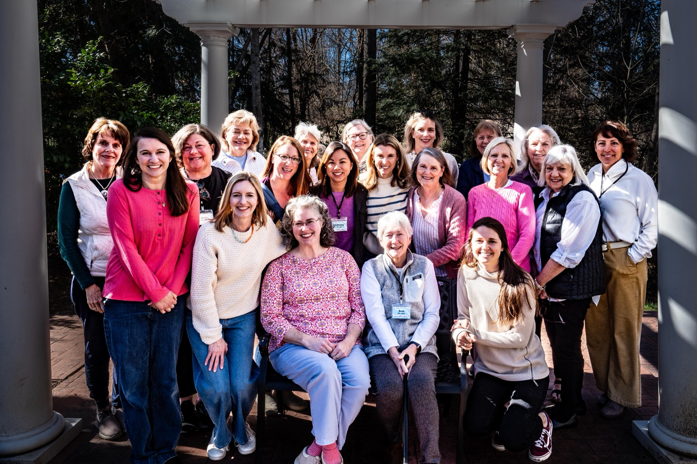

Women Together in the Word
For 40+ years, this weekly gathering has anchored women of all generations in the study of Scripture, fostering spiritual maturity and deep community within the heart of Trinity.
“WTW has ministered to me in countless ways over the past 10 years. When I was a stay-at-home mom with toddlers, the nursery gave me a much-needed midweek respite. My small group became a source of faithful prayer, encouragement, and fellowship through life’s trials and challenges. The weekly homework and teaching have continually drawn me into God’s Word and helped keep me accountable to studying it faithfully. Through WTW’s leadership, I’ve also had the privilege of serving in ways that have stretched both my strengths and my weaknesses, growing my faith in the process. I love WTW and am deeply grateful for the many ways it has blessed me personally, as well as our church body and the Charlottesville community.”
Study Highlights
A “Reading List” of the most impactful books or series the women have tackled over the decades. Complete list of studies →
Voices of Growth
“In groups some people stand in circles and it’s hard to break in, not impossible but not always easy. The women in WTW stand in a horseshoe shape where there’s space for people to come in.”
“I was not raised with religion but have always deeply wanted it in my life. WTW has been a dream come true for me. I feel like the text is presented in a way that even someone with very little background knowledge can access and it has been approachable in a way that has changed my life. My experience with WTW has truly been transformational for me.”
“The WTW teachers encourage us to come to God’s Word humbly, asking Him for understanding, asking Him to reveal Himself in His Word. And then diligently reading, meditating, and studying the Word on our own first. I am thankful to WTW for helping me deepen my relationship with the Lord through the study of His Word.”
“WTW was a wonderful opportunity to develop friendships with women of all ages and stages of their walk with God.”
Hospitality
Each December, WTW hosts an Annual Christmas Brunch for women within the church and from the community to kick off the Advent season.
-

-

-
-
